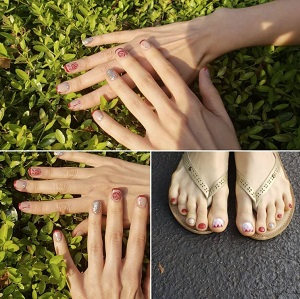
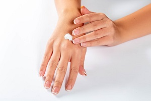
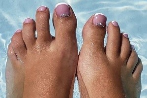
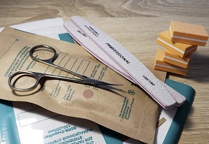
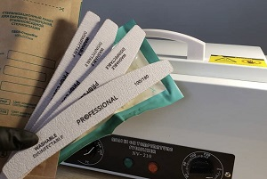

I Like What I Do

Since childhood, I like to draw, but I have never done this professionally. After the birth of my baby, I decided to realize myself and graduated from manicure and pedicure courses. Now my hobby has become an important part of my life. I'm happy that I can create beauty and please other people with it.
To Cheer Up
I am sure that a bright and high-quality manicure can cheer up. Neat and beautiful nails, in themselves, attract attention and increase self-esteem. The artistic and colorful design is very popular now. It opens a whole world of different styles, bold combinations and miniature drawings that can bring a smile, attract attention, emphasize the style, and also highlight the owner of this art work from the crowd. Choose your style!
Manicure
When we say “perfect manicure”, we mean first and foremost well-groomed hands: moisturized skin, neat cuticle, suitable nail shape. Manicure, by the way, can tell a lot about a person’s character.
Pedicure
Pedicure is an important part of foot care and not only to make up your nails. To make your legs feel comfortable and look attractive, you need to take care of them regularly. Pedicure is one of those procedures that will help preserve the health and beauty of the feet for many years.
Disinfection is important
And so, I’ll talk about how nail tools, such as scissors, metal pushers, and nippers, are cleaned, washed, sterilized, and stored after a manicure procedure:
- Disinfection. At this stage, tools are completely immersed in a disinfectant solution. All items surfaces, including handles, are soaked for the time required on the disinfectant manufacturer’s label.
- PSO (pre-sterilization treatment). I rinse tools thoroughly in running water with a brush, thereby washing off the disinfectant.
- Drying. Items are put on top of a clean towel or napkin to air dry completely. 
- Sterilization. I place dry tools in disposable craft packages and put them to a dry heat autoclave for 60 minutes at a temperature of 180 Celsius degrees.
- Storage. Tools are stored in kraft packages and opened immediately before starting work with the client.
Also, I use disposable files and buffs.